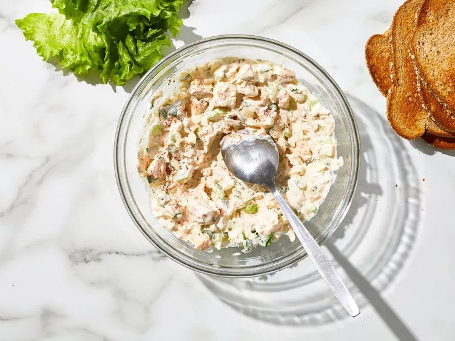

Tuna Fish Salad

This tuna fish is excellent served on top of a green salad or between two pieces of bread with fresh lettuce. Sprinkle a little paprika on top to add a little flavor and color.
Tuna Fish Salad Ingredients
- 1(5 ounce) can tuna, drained
- 1/2 cup mayonnaise
- 1/4 cup chopped celery
- 1/4 cup chopped onion
- 1 tablespoon chopped fresh parsley
- 1/2 teaspoon lemon juice
- 1/4 teaspoon garlic powder
- 1/8 teaspoon salt
- 1/8 teaspoon ground black pepper
- 1 pinch paprika, or to taste
Directions
- Gather all ingredients.
- Combine tuna, mayonnaise, celery, onion, parsley, lemon juice, garlic powder, salt, and pepper in a large bowl; mix well. Season with paprika; refrigerate until chilled.